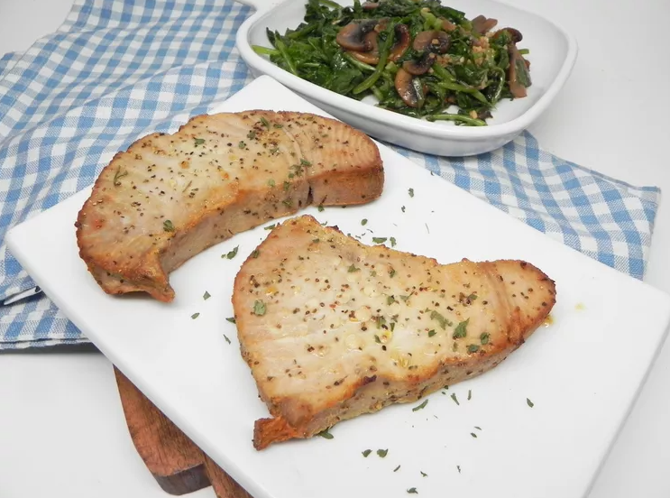

Airfryer Tuna Steak

Description
Three ingredients is all you need for this simple tuna steak recipe. It's light, flaky, and the lemon pepper adds the perfect zing.
Ingredients
- 1 teaspoon olive oil
- 2 (5 ounce) yellowfin tuna steaks
- 2 teaspoons lemon-pepper seasoning
Steps
- Preheat an air fryer to 400 degrees F (200 degrees C)
- Brush olive oil on both sides of tuna steaks. Sprinkle lemon pepper on both sides. Place tuna steaks into the air fryer basket.
- Air-fry for 5 minutes. Flip steaks over and cook until fish flakes easily with a fork, about 5 minutes more.